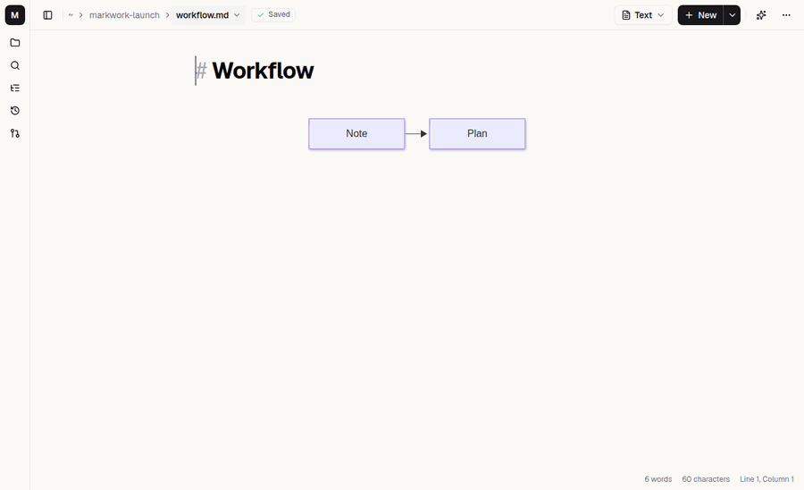
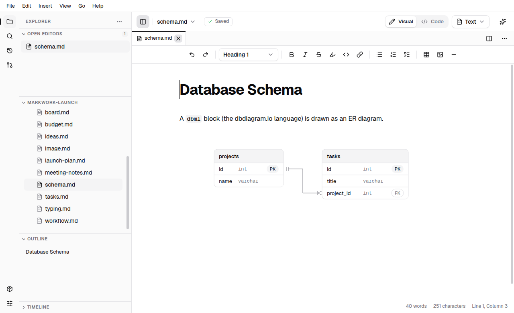

Workspace
Mermaid and DBML diagrams
The ```mermaid and ```dbml blocks are drawn as diagrams right in the document, rendered locally without the internet.

Mermaid
```mermaid
flowchart LR
Plan --> InProgress --> Review --> Done
```- Flowchart, sequence, class, state, ER, gantt, pie, and the other kinds that Mermaid supports.
- When the cursor is outside the block, only the diagram is visible. When the cursor enters, the code appears and the diagram becomes a preview below it that changes as you type.
- Syntax errors are shown below the block; the code is not hidden.
- A double click enlarges the diagram. Its colors follow light or dark mode.
DBML (dbdiagram.io)
```dbml
Table users {
id int [pk]
email varchar [unique]
}
Table notes {
id int [pk]
user_id int [ref: > users.id]
}
```A DBML schema is drawn as an ER diagram with the same behavior as Mermaid. Supported: Table (alias, pk, unique, note, ref: inside a column, indexes), and Ref both as a single line and as a block with the relations > < - <>. Enum, TableGroup, Project, and Note are skipped. The column on the “many” side of a relation is automatically marked FK.
